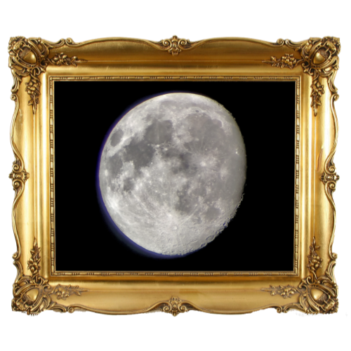
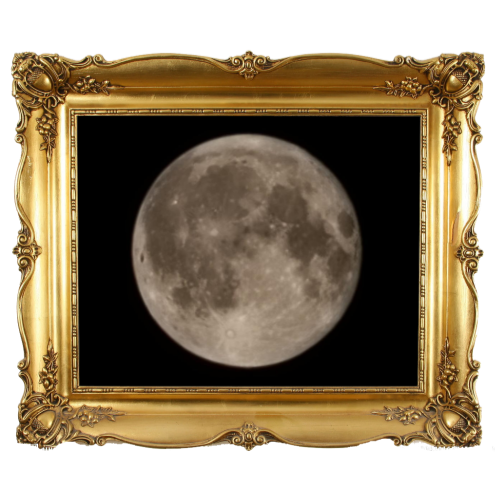
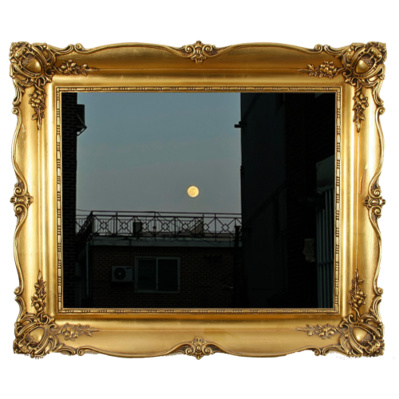

제 1회 별조각 사진전시회
별조각 사진전시회에 오신 것을 환영합니다.
해당 사진을 클릭하면 사진 제목 및 설명을 보실수 있습니다.

1등 양혁진

2등 박찬영

3등 이나경
제 1회 별조각 사진전시회
별조각 사진전시회에 오신 것을 환영합니다.
해당 사진을 클릭하면 사진 제목 및 설명을 보실수 있습니다.
1등 양혁진
2등 박찬영
3등 이나경
순위
사진 제목
사진 설명